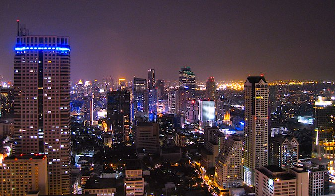

MY INSIDER’S GUIDE TO BANGKOK ON A BUDGET
February 11, 2016/ ByNomadicMatt

It seems that everyone is going to Thailand right now. I have friends thinking about going, friends going, and friends there already. It must be all that snow and cold weather in the Northern hemisphere right now! At the end of last year, I spent a considerable amount of time in the city. It’s one of my favorite cities in the world.
Bangkok usually leaves travelers unimpressed, given its pollution, traffic, and lack of tourist attractions. I played tour guide to a few friends when I was in the city and, while they enjoyed the food and nightlife, they didn’t think there was much to do. And they’re right — there isn’t much to do here in the traditional tourist sense, and most people can’t wait to get out.
I used to feel that way until I lived here and saw that Bangkok actually has a lot to offer. It just reveals its secrets slowly to those with the time to explore the hidden gems of this megacity. It requires you to leave the tourist ghettos of Khao San and Silom and find a city full of things to do, places to eat, and bars, clubs, and sites to visit.
" Below are my favorite places to visit and things to see:"
The Grand Palace
Hours: 8:30am–3:30pm daily. Price: 400 baht
This is Thailand’s royal palace. It was built at the end of the 18th century by King Rama I and is the official residence of the current monarch (though he doesn’t actually live there anymore; now it’s just used for ceremonies). It’s a beautiful palace filled with numerous temples, including Wat Pra Kaeo, which houses the 15th-century Emerald Buddha statue, whose robes are rotated three times a year by the king himself.
|